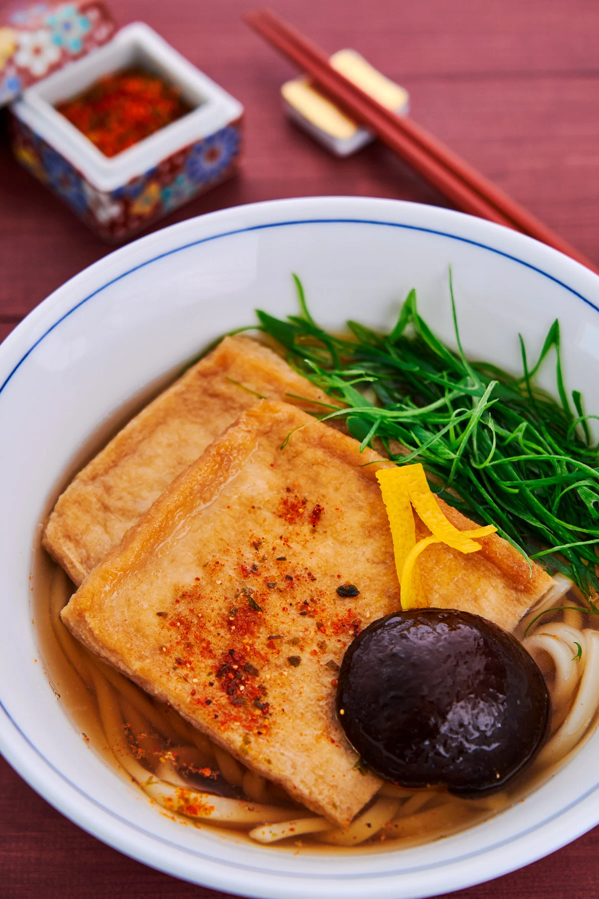

Kitsune Udon

Description
Allegedly the most popular udon dish in Japan
and named after a fox of Japanese mythology,
Kitsune Udon is umami on top of umami with
shiitake mushroom soaked in dashi stock and
imbued with usukuchi soy sauce. Although this is
the most complicated dish on this website, there's
nothing here that wouldn't be too difficult to get
a handle on.Original recipe
from
norecipes.com
Ingredients
For udon soup
- 1 1/2 cups of water
- 4 grams konbu (a type of dried kelp)
- 3 grams dried shiitake mushroom
- 2 teaspoons usukuchi soy sauce
- 1/2 teaspoon sugar
- 1/4 teaspoon salt
For Inari Agé
- 1 aburaage
- 1 tablespoon evaporated cane sugar
- 2 tablespoons sake
- 2 tablespoons water
- 1 tablespoon usukuchi soy sauce
Steps
- Rehydrate Add your
konbu and dried shiitake to a 1 1/2 cup bowl of
cold water. Allow them to rehydrate fully, which
could take 30-60 minutes
- Boil, boil, boil Bring a pan of
water to a boil then add your aburaage. Boil until
the water becomes cloudy which take about a minute.
- Drain! Drain the water and clean
your pan. Return to your aburaage and slice it in half
- Flavorize it In your pan, add your
sugar, sake, water, and soy sauce and bring this mixture
to a boil. It's now time for the aburaage to make its big
comeback to pan town. Place both halves in the mixture. Spruce things up with the stem from
the shiitake if it has finished rehydrating.
- Flip then flip then Keep flipping
until there is no liquid left. Set aside your Inari Agé;
it's time to move on to the udon.
- Begin the broth Remove the hydrated
shiitake and konbu from the bowl and pour the water through
a fine-mesh strainer into a saucepan.
- Mature the broth Add soy sauce, sugar,
and salt to the saucepan, then bring to a boil. Skim off any
excess foam that appears at the top
- Plate the udon Pour the soup into the
bowl first. Then add in your boiled and strained udon noodles
(preparation of such not included in this recipe guide).
Top it all off with the Inari Agé, scallions, yuzu zest,
maybe even your shiitake if you'd like.